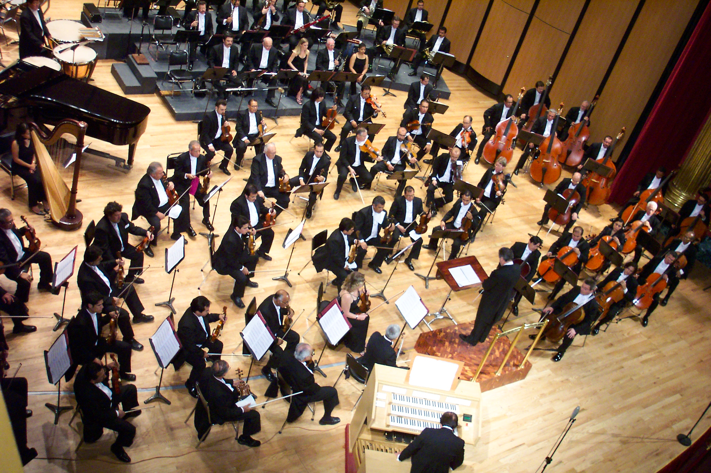

Achievements
Here are the school's achievements:
Art

- The school was the runner-up for the KISD Livestock Show and got the Gold Seal Award.
- The school was the 2012 JH Finalist for HLSR.
The above image was taken from https://unsplash.com/wallpapers/art.
Band
- The school is a three-time Texas Music Educators' Association State Honor Band finalist.
- The school was twice named a top five TMEA Honor band finalist.
- The school was for 7 years in a row named first at the
TMEA Region. - The school was named UIL Sweepstakes for nine consecutive years.
The above image was taken from https://www.alesis.com/products/view/e-practice-pad.
Choir
- UIL Sweepstakes, Best in Class
- The school was the Alamo Showcase Competition Superior, Best in Class and Best Overall Choir for all 6 Choirs in 2010.
- The school was named Katy Sixth Grade Festival Superior Ratings for all 3 choirs in 2010.
- The school was named Katy Sixth Grade Festival Best in Class Tenor and Mixed in 2010.
The above image was taken from https%3A%2F%2Fwww.lawrence.edu%2Fconservatory%2Fareas_of_study%2Fchoir%2Fconcert_choir&psig=AOvVaw1t3CMMyA9nbtFm2Mj_zBqT&ust=1609444449319000&source=images&cd=vfe&ved=0CAMQjB1qFwoTCKjzzve99u0CFQAAAAAdAAAAABAO.
Orchestra
- UIL Sweepstakes, Best in Class
- The school was named the Texas Music Educators Association 2010 Honor Full Orchestra.
- In 2010, Katy ISD was named one of the Best Communities for Music Education by the NAMM Foundation.
The above image was taken from https://en.wikipedia.org/wiki/Orchestra.
- The school was named to Texas Monthly's Best Public Schools list in 2006.
- In the Regional Scholastic Writing Contest, 2 silver keys and 1 gold key where given to the school at the regional level. One Silver Key at the national level was given to the school in new York.
- Since the school opened in 2001, CRJH girls and boys athletics have won over 75 district championships in tennis, football, volleyball, basketball, and track.
- The school was 3rd place in the 2012 Destination Imagination District Competition.
- The school was third at Science Olympiad regionals, 9th at the state competition in 2012, and 3rd at state in 2013.
- The school was recognized twice in Taylor Publishing's yearbook , and won even more awards at yearbook camp.